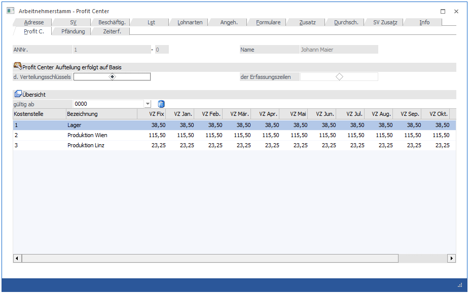
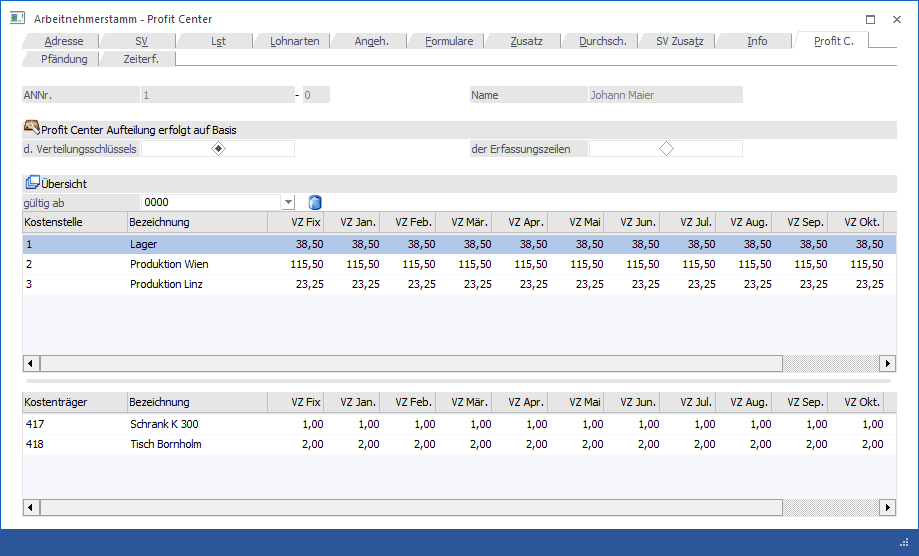

In diesem Fenster, das über den Menüpunkt
1 Stammdaten
1 Arbeitnehmer
1 Arbeitnehmerstamm
oder Schnellaufruf
1 STRG + A
1 Register Arbeitnehmerstamm - Profit C. (Schnellaufruf ALT + P im AN-Stamm)
aufgerufen wird, können die Zuordnungen eines Arbeitnehmers zu Profit Centers (Kostenstellen) und ggf. Kostenträgern vorgenommen werden.
Diese Zuordnung dient der Berechnung der angefallenen Kosten pro Profit Center (Kostenstelle) und kann auch als Basis zur KORE-Übergabe verwendet werden.
Es gibt 2 Möglichkeiten, wie die Verhältniszahlen für die Auswertung ermittelt werden:
Ø Profit Center Aufteilung erfolgt auf Basis d. Verteilungsschlüssel
Wird diese Option aktiviert, dann gilt der Verteilungsschlüssel der in der Tabelle eingetragen werden kann.
Ø Profit Center Aufteilung erfolgt auf Basis der Erfassungszeilen
Wird diese Option gewählt, dann wird der Verteilungsschlüssel anhand der Werte in der Erfassungszeile der Abrechnung gebildet.

Eingabefelder
Ø gültig ab
Grundsätzlich kann hier pro Jahr eine Aufteilung erfasst bzw. verwaltet werden. Wenn diese Aufteilung immer gültig ist, dann wird in der Auswahllistbox der Wert 0000 angezeigt. Wenn nun eine neue Aufteilung hinterlegt werden soll, so muss in der Auswahllistbox nur das Jahr eingetragen werden, ab dem die neue Aufteilung gelten soll (z.B. 2010). Nachdem die Meldung
mit JA bestätigt wird, können für dieses Jahr neue Verteilungsschlüssel erfasst werden.
Logik:
Für diese Aufteilung gilt folgende Logik: Wenn ein AN neu angelegt wird, dann ist die Auswahllistbox vorerst einmal leer. Nun kann entweder eine Jahreszahl eingetragen werden (wenn z.B. schon absehbar ist, dass sich die Aufteilung jährlich ändert), dann gilt diese Aufteilung ab diesem Abrechnungsjahr. Alternativ kann auch 0000 eingetragen werden, dann gilt diese Aufteilung immer - bis dann ggf. einmal eine Jahreszahl hinterlegt wird. Wenn die Option "Profit Center Aufteilung erfolgt auf Basis der Erfassungszeilen" eingestellt ist, dann werden bei der Kostenrechnungsübergabe die Werte vom Programm errechnet und auch in den AN-Stamm zurückgeschrieben. Dabei ist es so, dass jedes Abrechnungsjahr automatisch ein neues Jahr angelegt wird. Dadurch ist gewährleistet, dass auch Auswertungen aus Vorjahren mit der entsprechenden Aufteilung durchgeführt werden.
Ø Löschen Button
Durch Anklicken des Löschen-Buttons wird die Aufteilung des aktuell ausgewählten Jahres gelöscht.
Ø Kostenstelle
Das Feld Kostenstelle entspricht dem Profit Center. Die Kostenstellen-Stammdaten können über die WinLine KORE angelegt werden. Durch Drücken der F9-Taste kann nach allen angelegten Kostenstellen gesucht werden. Nach Bestätigung der Kostenstelle wird die Bezeichnung im nächsten Feld angezeigt.
Ø Verhältniszahlen
Es gibt zwei Möglichkeiten, wie die Verhältniszahlen eingegeben werden können:
ü Fixe Verhältniszahlen
In diesem
Fall wird im Feld "VZ Fix" die gewünschte Verhältniszahl eingegeben. Nach der
Bestätigung wird dieser Wert in alle 12 Monate mit übernommen. Dieses Feld kann
aber auch als Vorschlag verwendet werden: Es wird ein Wert eingetragen, dieser
wird auf alle 12 Monate dupliziert, danach wird nur mehr z.B. in den
Sommermonaten Juli und August eine alternative Verhältniszahl eingetragen.
ü Verhältniszahlen pro Monat
Wenn
pro Monat eine unterschiedliche Verhältniszahl eingegeben werden soll, so bleibt
das Feld "VZ Fix" auf 0 und in den jeweiligen Monatsfeldern kann ein Wert
eingetragen werden.
Diese Eingaben sind reine Verhältniszahlen und keine Prozentangaben - d.h. die Summe der Verhältniszahlen muss sich nicht auf 100 ausgehen.
Wenn in den Applikations-Parametern (Programm WinLine START, Menüpunkt Parameter / Applikations-Parameter, Bereich LOHN-Parameter / Kore/Pfändungseinstellungen) die Option
Ø Profit Center Aufteilung nach Kostenträger
eingestellt ist, dann wird eine 2 Tabelle angezeigt, in der eine Aufteilung nach Kostenträgern durchgeführt werden kann, wobei die Aufteilung pro Kostenstelle erfolgt. Dabei stehen folgende Felder zur Verfügung:
Ø Kostenträger
Hier wird der Kostenträger eingetragen, auf den die Kosten gebucht werden sollen. Die Kostenträger-Stammdaten können über die WinLine KORE angelegt werden. Durch Drücken der F9-Taste kann nach allen angelegten Kostenträgern gesucht werden. Nach Bestätigung des Kostenträgers wird die Bezeichnung im nächsten Feld angezeigt.
Ø Verhältniszahlen
Es gibt zwei Möglichkeiten, wie die Verhältniszahlen eingegeben werden können:
ü Fixe Verhältniszahlen
In diesem
Fall wird im Feld "VZ Fix" die gewünschte Verhältniszahl eingegeben. Nach der
Aufteilung wird dieser Wert in alle 12 Monate mit übernommen. Dieses Feld kann
aber auch als Vorschlag verwendet werden: Es wird ein Wert eingetragen, dieser
wird auf alle 12 Monate dupliziert, danach wird nur mehr z.B. in den
Sommermonaten Juli und August eine alternative Verhältniszahl eingetragen.
ü Verhältniszahlen pro Monat
Wenn
pro Monat eine unterschiedliche Verhältniszahl eingegeben werden soll, so bleibt
das Feld "VZ Fix" auf 0 und in den jeweiligen Monatsfeldern kann ein Wert
eingetragen werden.
Diese Eingaben sind reine Verhältniszahlen und keine Prozentangaben - d.h. die Summe der Verhältniszahlen muss sich nicht auf 100 ausgehen.

Über den Menüpunkt
1 Abschluss
1 Check
1 Profit Center Checkliste
kann eine Liste aller AN mit ihren Zuordnungen ausgegeben werden.
Die Auswertung der Profit Center selbst erfolgt über den Menüpunkt
1 Auswertungen
1 Profit Center Auswertung